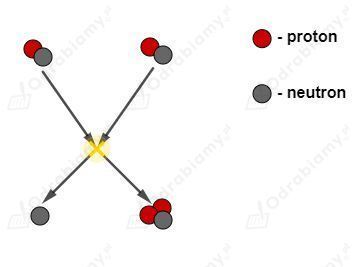

Zapiszmy schemat tej reakcji jądrowej:
Drugim z produktów jest neutron.
Rysunek przedstawiający przebieg tej reakcji:

Gęstość uranu wynosi:
Masa krytyczna dla kuli uranu-235 jest równa:
Gęstość wyrażamy jako:
Objętość kuli wyznaczamy jako:
Stąd:
Wyznaczmy promień tej kuli uranu:
Kula uranu o masie krytycznej ma rozmiary podobne do główki kapusty.
a)
Układamy odpowiednią proporcję:
Żeby uzyskać taką energię potrzeba by spalić około 2670 ton węgla.
b)
Układamy odpowiednią proporcję:
Żeby uzyskać taką energię potrzeba by spalić około 18 200 ton węgla.
a)
Prędkość światła przyjmujemy jako:
Masa elektronu i pozytonu jest taka sama i równa:
Całkowita anihilowana masa wyniesie:
Korzystamy ze wzoru wiążącego energię z masą:
Obliczmy jaka energia wydzielana jest w postaci fotonów podczas anihilacji elektronu z pozytonem:
b)
Podczas anihilacji emitowane są dwa fotony o takiej samej energii. Wyznaczmy energię jednego z tych fotonów.
Fotony światła fioletowego mają energię:
Obliczmy ile fotonów tego światła ma energię równą energii fotonu anihilacji.
W zadaniu 28. wyznaczyliśmy, że energia jednego fotonu powstałego podczas anihilacji jest równa:
Energię fotonu wyrażamy jako:
Wyznaczmy szukaną długość fali:
Przyjęta masa:
Prędkość światła:
Korzystamy ze wzoru wiążącego energię z masą:
Obliczmy naszą energię spoczynkową:
Światowe zużycie energii elektrycznej w 2017 roku wyniosło:
Obliczmy stosunek tych energii:
Nasza energia spoczynkowa jest około 12 razy mniejsza od całkowitej światowej zużytej energii elektrycznej w 2017 roku.
Dane:
Szukane:
Rozwiązanie:
Reakcja spalania węgla przebiega następująco:
Zakładamy, że w masie Słońca obecne byłyby atomy węgla i cząsteczki tlenu. Znamy ich masy molowe:
Obliczmy ile procent masy Słońca stanowi masa węgla:
Zatem masa węgla obecna na Słońcu byłaby równa:
Wiemy ile energii wydziela spalanie jednego kilograma węgla. Obliczmy ile energii może być wydzielone ze spalenia całego węgla obecnego w masie Słońca.
Wiemy ile energii wysyła nasza gwiazda w ciągu jednej sekundy. Ułóżmy odpowiednią proporcję w celu wyznaczenia czasu w jaki Słońce wypromieniowałoby całą energię ze spalania węgla.
Słońce zgasłoby po około 1585 latach.
Zapiszmy schemat przeprowadzanej reakcji syntezy:
Masy poszczególnych izotopów są równe:
Prędkość światła wynosi:
Obliczmy deficyt masy produktów względem substratów.
Obliczmy energię jaka wydzieliłaby się podczas syntezy jednego jądra węgla.
W jednym molu węgla liczba jader atomów węgla wynosi:
Stąd całkowita energia z uzyskiwania 1 mola węgla będzie równa:
Podczas syntezy jednego mola węgla wydziela się energia równa:
Masa jednego mola węgla jest równa 12 g. Ułóżmy odpowiednią proporcję pozwalającą na wyznaczenie energii wydzielonej podczas syntezy 1 kg węgla.
Dane:
Szukane:
Rozwiązanie:
Liczba protonów w jądrze żelaza:
Liczba nukleonów w jądrze żelaza:
Liczba neutronów w jądrze żelaza:
Obliczmy deficyt masy jądra żelaza:
Energia wiązania jądra żelaza będzie równa:
Energia wiązania przypadająca na jeden nukleon będzie równa:
Energia wiązania jadra helu wynosi:
W jądrze helu znajdują się 4 nukleony. Wyznaczmy energię wiązania przypadającą na jeden nukleon:
Energia wiązania na jeden nukleon dla jądra żelaza jest równa:
Jądro żelaza ma większą energię wiązania przypadającą na jeden nukleon niż jądro helu.